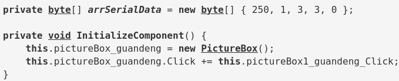

Emacs Publish 的源码高亮问题
Table of Contents
1 源码高亮不正确的问题
当前 publish org 文件的时候，是将相关 lisp 代码放在一个文件中，再通过 bash 执行 。但写上一篇文章时，突然发现，虽然使用了 htmlize , 代码部分有高亮，但是和主题并不一致，是黑白色，仅有下划线和粗体的样式

2 使用外部 css
最终发现是 batch 模式中，emacs有字体定义，但是没有颜色。所以解决办法是设置 org-html-htmlize-output-type 为 'css ，然后再增加 CSS 文件
在 org-html-htmlize-output-type 方法的文档中，有如下描述，同时文档中建议使用 org-html-htmlize-generate-css 生成相应的 CSS 文件
However, this will fail when using Emacs in batch mode for export, because then no rich font definitions are in place. It will also not be good if people with different Emacs setup contribute HTML files to a website, because the fonts will represent the individual setups. In these cases, it is much better to let Org/Htmlize assign classes only, and to use a style file to define the look of these classes. To get a start for your css file, start Emacs session and make sure that all the faces you are interested in are defined, for example by loading files in all modes you want. Then, use the command ‘M-x org-html-htmlize-generate-css’ to extract class definitions.
3 生成 CSS
我尝试用 org-html-htmlize-generate-css 生成 CSS，但是出来许多不必要的样式，而且关键是代码高亮依旧是错误的
以下是该方法的源码
1: (defun org-html-htmlize-generate-css () 2: "Create the CSS for all font definitions in the current Emacs session. 3: Use this to create face definitions in your CSS style file that can then 4: be used by code snippets transformed by htmlize. 5: This command just produces a buffer that contains class definitions for all 6: faces used in the current Emacs session. You can copy and paste the ones you 7: need into your CSS file. 8: 9: If you then set `org-html-htmlize-output-type' to `css', calls 10: to the function `org-html-htmlize-region-for-paste' will 11: produce code that uses these same face definitions." 12: (interactive) 13: (unless (require 'htmlize nil t) 14: (error "htmlize library missing. Aborting")) 15: (and (get-buffer "*html*") (kill-buffer "*html*")) 16: (with-temp-buffer 17: (let ((fl (face-list)) 18: (htmlize-css-name-prefix "org-") 19: (htmlize-output-type 'css) 20: f i) 21: (while (setq f (pop fl) 22: i (and f (face-attribute f :inherit))) 23: (when (and (symbolp f) (or (not i) (not (listp i)))) 24: (insert (org-add-props (copy-sequence "1") nil 'face f)))) 25: (htmlize-region (point-min) (point-max)))) 26: (pop-to-buffer-same-window "*html*") 27: (goto-char (point-min)) 28: (when (re-search-forward "<style" nil t) 29: (delete-region (point-min) (match-beginning 0))) 30: (when (re-search-forward "</style>" nil t) 31: (delete-region (1+ (match-end 0)) (point-max))) 32: (beginning-of-line 1) 33: (when (looking-at " +") (replace-match "")) 34: (goto-char (point-min)))
可以看到 22行和23行，这里会筛选出没有 :inherit 属性的字体，由于我使用的 modus-theme 中设置了此项属性，所以被排除了，所以我们可以重新将这一段重新改一下，顺便将所有 font-lock 的字体筛选出来，这部分才是代码高亮需要用到的
(while (setq f (pop fl)) (when (and (symbolp f) (string-match "^font-lock" (symbol-name f))) (insert (org-add-props (copy-sequence "1") nil 'face f))))
最终生成的 CSS 中还包含了一些，body 以及 a 标签的样式，这里手动删除以下即可
4 完整的方案
在 build-site.el 中设置变量
(setq org-html-htmlize-output-type 'css)在当前打开的 emacs 中，使用下边改过的方法，生成 CSS
(defun org-html-htmlize-generate-css () "Create the CSS for all font definitions in the current Emacs session. Use this to create face definitions in your CSS style file that can then be used by code snippets transformed by htmlize. This command just produces a buffer that contains class definitions for all faces used in the current Emacs session. You can copy and paste the ones you need into your CSS file. If you then set `org-html-htmlize-output-type' to `css', calls to the function `org-html-htmlize-region-for-paste' will produce code that uses these same face definitions." (interactive) (unless (require 'htmlize nil t) (error "htmlize library missing. Aborting")) (and (get-buffer "*html*") (kill-buffer "*html*")) (with-temp-buffer (let ((fl (face-list)) (htmlize-css-name-prefix "org-") (htmlize-output-type 'css) f i) (while (setq f (pop fl)) (when (and (symbolp f) (string-match "^font-lock" (symbol-name f))) (insert (org-add-props (copy-sequence "1") nil 'face f)))) (htmlize-region (point-min) (point-max)))) (pop-to-buffer-same-window "*html*") (goto-char (point-min)) (when (re-search-forward "<style" nil t) (delete-region (point-min) (match-beginning 0))) (when (re-search-forward "</style>" nil t) (delete-region (1+ (match-end 0)) (point-max))) (beginning-of-line 1) (when (looking-at " +") (replace-match "")) (goto-char (point-min)))
- 将生成的 CSS 自己修剪一下，放在相应的文件中并引入